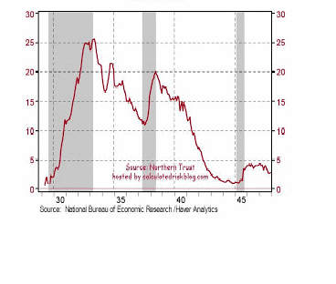
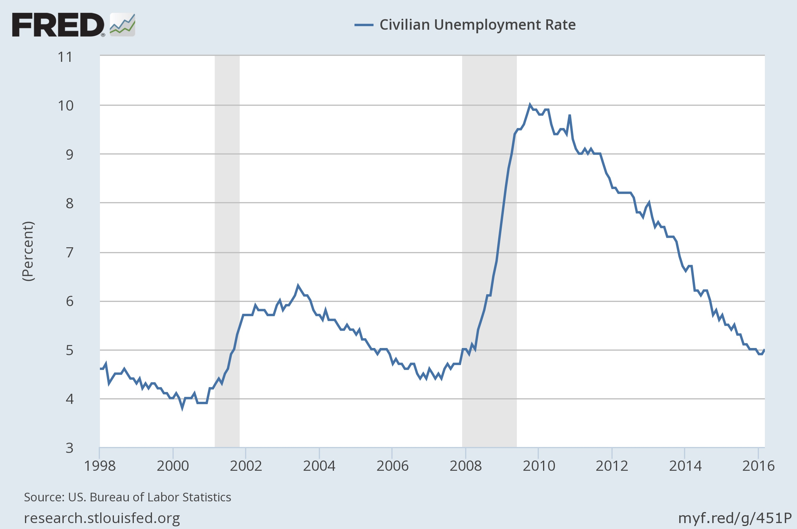

Great Depression vs Great Recession
GDP and Unemployment ( from Bordo's paper)

=================================
The Great Depression -- why/how did it happen.
Organizing question: was it a decline in Money Supply or Money Demand?
In the table below we see the stock of money in the economy falls by about 1/5 in the years 1929 to 1933 (26.4 to 19.4). Debate continues over whether the extent to which this was a cause, or a result, of the Great Depression.
The result story: a collapse of consumption and/or investment pulled down the money stock (less money needed as the economy slowed); thus a decline in money demand resulted from the GD.
The cause story: a decline in the money supply caused the economy to slow down (contractionary monetary policy by the Federal Reserve, which was focussed on maintaining the gold standard).
If money demand decreased, we'd see a decline in
the "price" of money -- there would be surplus of money so
its value would fall. If it was supply that decreased we'd
expect the opposite for the value of money: money becoming more
scarce, its "price" would increase -- there would be a
shortage of money so its value would fall.
Economists have two ways to think of the "price" of money : interest rates (cost to borrow) and 1/CPI (the value of money in terms of consumer goods).
Looking at interest rates, we seem to have evidence of reduced demand for money: the prime interest rate fell from almost 6% in 1929 to under 1% by 1935. Some economists view the decline of interest rates over the period as indicating excess supply (reduced demand) for money.
Looking at the consumer price index (CPI), we seem to have evidence of reduced supply of money: the CPI fell from 51.3 in 1929 to 38.8 in 1933. That says that in 1933 it took only $38.80 to buy the goods that had cost $51.30 in 1929. That deflation of prices meant that a dollar had become more valuable.
So depending how you think about the "price" of money, the evidence points to either a decline in Money demand (interest rates fell) or a decline in Money supply (the CPI fell, so its reciprocal rose).
For many economists, the causes of the Great Depression remain a puzzle, with the interest rate and CPI movements an apparent paradox that has not been explained yet.
But some believe that focusing on real interest rates can resolve the paradox. Since there was deflation (falling prices) in the early 1930s, the real cost of borrowing was greater than the interest rate might suggest. Put simply: if someone loaned you $100 interest-free in 1931, the $100 you paid back a year later would have been worth about 10% more than what you had borrowed, because prices of goods had fallen about 10%. Looked at this way, the real interest rate in 1929 was about 6% (5.85-0) and in 1931 it was almost 12% (2.64- -9 = 11.64). The final point in the argument is to say that people expected the deflation of early 1930s, so they knew that the low nominal interest rates were going to turn out to be high real interest rates when it was time to pay back their loans. If the 1930s deflation was expected, then the high real interest rates are evidence of decreased money supply. But if the deflation was not expected then the high real rates were a surprise and we are back to the story that interest rates were low (easy-money) early in the Depression.
Note: the real interest rate is calculated as the actual (nominal) interest rate minus the inflation rate (Real Interest = Nominal Interest-Inflation).
|
|
real GDP |
unemp |
CPI |
inflation |
prime i |
stock prices |
Money |
|
|
|
|
|
|
|
|
(M1) |
|
|
|
|
|
|
|
|
|
|
1925 |
|
3.2 |
|
|
4.02 |
140 |
25.4 |
|
1926 |
|
1.8 |
|
|
4.34 |
158 |
25.9 |
|
1927 |
|
3.3 |
52.0 |
|
4.11 |
192 |
25.9 |
|
1928 |
|
4.2 |
51.2 |
-1% |
4.85 |
250 |
26.1 |
|
1929 |
204 |
3.2 |
51.3 |
0% |
5.85 |
326 |
26.4 |
|
1930 |
184 |
8.7 |
50.0 |
-3% |
3.59 |
264 |
25.4 |
|
1931 |
169 |
15.9 |
45.6 |
-9% |
2.64 |
171 |
23.6 |
|
1932 |
144 |
23.6 |
40.9 |
-11% |
2.73 |
87 |
20.6 |
|
1933 |
142 |
24.9 |
38.8 |
-5% |
1.73 |
112 |
19.4 |
|
1934 |
154 |
21.7 |
40.1 |
3% |
1.02 |
123 |
21.5 |
|
1935 |
170 |
20.1 |
41.1 |
2% |
0.75 |
133 |
25.5 |
|
1936 |
193 |
16.9 |
41.5 |
1% |
0.75 |
194 |
29.2 |
|
1937 |
203 |
14.3 |
43.0 |
|
0.94 |
193 |
30.3 |
|
1938 |
193 |
19.0 |
42.2 |
|
0.81 |
144 |
30.0 |
|
1939 |
209 |
17.2 |
41.6 |
|
0.59 |
151 |
33.6 |
|
1940 |
227 |
14.6 |
42.0 |
|
0.56 |
138 |
|
|
1941 |
264 |
9.9 |
44.1 |
|
0.53 |
123 |
|
|
1942 |
|
4.7 |
48.8 |
|
0.66 |
|
|
|
1943 |
|
1.9 |
51.8 |
|
0.69 |
|
|
|
1944 |
|
1.2 |
52.7 |
|
0.73 |
|
|
|
1945 |
|
1.9 |
53.9 |
|
0.75 |
|
|
sources: to be retrieved and confirmed -- sorry about that!